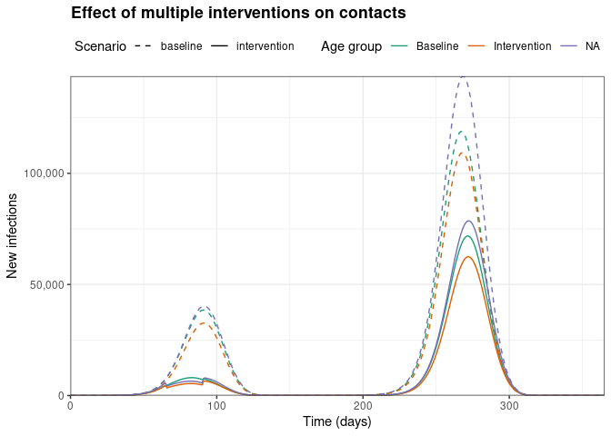

Modelling time-dependence and seasonality in transmission dynamics
Source:vignettes/modelling_time_dependence.Rmd
modelling_time_dependence.RmdNew to epidemics? It may help to read the “Get started” vignette first, and to browse through some of the other vignettes such as “Modelling a non-pharmaceutical intervention”, or “Modelling interventions on epidemic parameters”.
This vignette shows how to compose a model in which one or more epidemic parameters vary gradually over time.
This functionality can be used to compose models that include a seasonal component, i.e., where the epidemic parameters vary due to variation in ambient conditions over the modelled time-period.
This is intended to be different from modelling interventions on epidemic parameters by allowing small, continuous changes to the epidemic parameters, while rate interventions are intended to be large step-changes as would be expected from policies such as mask mandates or the roll-out of therapeutics.
The time-dependence functionality shown in this vignette is also expected to be a starting point for data-driven modelling in which epidemic parameters vary as a function of externally provided data, such as climate data.
Setup and initial conditions
Code
# set up initial conditions
polymod <- socialmixr::polymod
contact_data <- socialmixr::contact_matrix(
polymod,
countries = "United Kingdom",
age.limits = c(0, 20, 40),
symmetric = TRUE
)
contact_matrix <- t(contact_data$matrix)
demography_vector <- contact_data$demography$population
# Prepare some initial objects
uk_population <- population(
name = "UK population",
contact_matrix = contact_matrix,
demography_vector = demography_vector,
initial_conditions = matrix(
c(1 - 1e-6, 0, 1e-6, 0, 0),
nrow = nrow(contact_matrix), ncol = 5L,
byrow = TRUE
)
)Defining a time-dependent function
Next we prepare a function that affects the transmission rate (often denoted \(\beta\)) in such a way that there are two peaks and two troughs in the transmission rate over the course of a year.
Note that this example uses an arbitrary function, and that we might want to choose a more realistic function in a model. Nonetheless, as the figures later will show, this can still generate realistic looking epidemic curves and is a good starting point for understanding how this feature works.
Code
# prepare function, refer to transmissiblity as beta in function name
mod_beta <- function(time, x, tmax = 365 / 4) {
x + (x * sinpi(time / tmax))
}We can plot the output of this function over time to examine its effect on \(\beta\).
Code

Model with time-dependent transmission
Next we run an epidemic model while including the time dependence of the transmission rate.
Code
# note transmission_rate is the function/model parameter
# the function that affects it may have any name
data <- model_default(
population = uk_population,
time_dependence = list(
transmission_rate = mod_beta
),
time_end = 365, increment = 1
)
# get data on new infections
data_infections <- new_infections(data)We plot the number of newly infectious individuals to check the model dynamics. Note that plotting code is folded and can be expanded.
Code
# plot data on new infections
ggplot(data_infections) +
geom_line(
aes(x = time, y = new_infections, col = demography_group)
) +
scale_y_continuous(
labels = scales::comma,
name = "New infections"
) +
scale_color_brewer(
palette = "Dark2",
name = "Age group"
) +
theme_bw() +
coord_cartesian(
expand = FALSE
) +
labs(
x = "Time (days)",
title = "Effect of time-dependence of transmission rate"
) +
theme(
legend.position = "top",
plot.title = element_text(face = "bold")
)
Here, we can see that the epidemic has a large first wave, followed by a smaller second wave later in the model run (which represents one year).
Non-pharmaceutical interventions and time-dependence
We can also model the effect of imposing non-pharmaceutical interventions that reduce social contacts, on the trajectory of an epidemic with time-dependent changes in the transmission rate.
In this example, we impose an intervention with three phases: (1) closing schools, which primarily affects the age group 0 – 19, then (2) closing workplaces, which affects the age groups > 20 years old, and then (3) partially reopening schools so that the intervention has a lower effect on the social contacts of the age group 0 – 19.
First we construct the intervention, an object of the <contacts_intervention> class.
Code
# school closures affecting younger age groups
close_schools <- intervention(
type = "contacts", time_begin = 50, time_end = 120,
reduction = c(0.1, 0.01, 0.01)
)
# workplace closures affecting mostly adults
close_workplaces <- intervention(
type = "contacts", time_begin = 65, time_end = 90,
reduction = c(0.01, 0.2, 0.2)
)
# partially reopen schools
partial_schools <- intervention(
type = "contacts", time_begin = 120, time_end = 180,
reduction = c(0.05, 0.01, 0.01)
)
# combine interventions
npis <- c(close_schools, close_workplaces, partial_schools)
# print to examine
npis
#>
#> Intervention name:
#> Begins at:
#> npi_1 npi_2 npi_3
#> [1,] 50 65 120
#>
#> Ends at:
#> npi_1 npi_2 npi_3
#> [1,] 120 90 180
#>
#> Reduction:
#> Interv. 1 Interv. 2 Interv. 3
#> Demo. grp. 1 0.10 0.01 0.05
#> Demo. grp. 2 0.01 0.20 0.01
#> Demo. grp. 3 0.01 0.20 0.01Then we run the model while specifying the time-dependence of the transmission rate, as well as the intervention on social contacts.
Code
# run the model with interventions and time-dependence
data_npi <- model_default(
population = uk_population,
intervention = list(contacts = npis),
time_dependence = list(
transmission_rate = mod_beta
),
time_end = 365, increment = 1
)
# get the infections
data_infections_npi <- new_infections(data_npi)We assign scenario names to the data, combine them, and plot a comparison.
Code
data_infections$scenario <- "baseline"
data_infections_npi$scenario <- "intervention"
# combine the data
data_npi_compare <- bind_rows(data_infections, data_infections_npi)Code
ggplot(data_npi_compare) +
geom_line(
aes(
x = time, y = new_infections,
col = demography_group, linetype = scenario
)
) +
scale_y_continuous(
labels = scales::comma,
name = "New infections"
) +
scale_color_brewer(
palette = "Dark2",
name = "Age group",
labels = c("Baseline", "Intervention")
) +
scale_linetype_manual(
name = "Scenario",
values = c(
baseline = "dashed",
intervention = "solid"
)
) +
theme_bw() +
coord_cartesian(
expand = FALSE
) +
labs(
x = "Time (days)",
title = "Effect of multiple interventions on contacts"
) +
theme(
legend.position = "top",
plot.title = element_text(face = "bold")
)
We can observe that implementing interventions on social contacts can substantially reduce the number of infections in all age groups in both epidemic waves.
Timing vaccination to prevent epidemic peaks
We can model the effect of timing vaccination doses to begin with the end of the first wave, at about 120 days. This example does not include non-pharmaceutical interventions.
First we define a vaccination regime that targets adults aged over 40 years as a priority group. All other age groups are not vaccinated in this campaign. We also assume that a single dose of the vaccine confers immunity (i.e., non-leaky vaccination).
Code
# define vaccination object
vax_regime <- vaccination(
nu = matrix(0.001, nrow = 3, ncol = 1),
time_begin = matrix(c(0, 0, 120)),
time_end = matrix(c(0, 0, 220))
)
# view the vaccination object
vax_regime
#>
#> Vaccination name:
#> Begins at:
#> dose_1
#> [1,] 0
#> [2,] 0
#> [3,] 120
#>
#> Ends at:
#> dose_1
#> [1,] 0
#> [2,] 0
#> [3,] 220
#>
#> Vaccination rate:
#> dose_1
#> [1,] 0.001
#> [2,] 0.001
#> [3,] 0.001We model the effect of administering vaccine doses between the expected peaks of the epidemic waves, and plot the outcome.
Code
# pass time dependence and vaccination. Note no interventions
data_vax <- model_default(
population = uk_population,
vaccination = vax_regime,
time_dependence = list(
transmission_rate = mod_beta
),
time_end = 365, increment = 1
)
# collect data and add scenario
data_vax_infections <- new_infections(
data_vax,
compartments_from_susceptible = c("exposed", "vaccinated")
)
data_vax_infections$scenario <- "vaccination"
# combine data
data_vax_compare <- bind_rows(data_infections, data_vax_infections)Code
ggplot(data_vax_compare) +
geom_rect(
aes(
xmin = 120, xmax = 220,
ymin = 0, ymax = 20e3
),
fill = "grey", alpha = 0.1
) +
geom_line(
data = filter(
data_vax, compartment == "vaccinated", demography_group == "40+"
),
aes(time, value / 1e2),
colour = "darkblue"
) +
annotate(
geom = "text",
x = 190,
y = 10e3,
label = "Vaccines administered (100 days)",
angle = 90,
colour = "darkblue"
) +
geom_line(
aes(
x = time, y = new_infections,
col = demography_group, linetype = scenario
)
) +
scale_y_continuous(
labels = scales::comma,
name = "New infections",
sec.axis = dup_axis(
trans = function(x) x * 1e2,
name = "Individuals vaccinated",
labels = function(x) {
scales::comma(x, scale = 1e-6, suffix = "M")
}
)
) +
scale_color_brewer(
palette = "Dark2",
name = "Age group"
) +
scale_linetype_manual(
name = "Scenario",
values = c(
baseline = "dashed",
vaccination = "solid"
)
) +
theme_bw() +
coord_cartesian(
ylim = c(0, 20e3),
expand = FALSE
) +
labs(
x = "Time (days)",
title = "Effect of a vaccination regime"
) +
theme(
legend.position = "top",
plot.title = element_text(face = "bold")
)
Here, we can see that over 2 million individuals are vaccinated (and immunised; blue line, right-hand Y axis) over the 100 days between the end of the first wave of infections, and the start of the second wave of infections.
Vaccination reduces the number of daily infections among individuals of all age groups in the second wave. At its peak, the vaccination scenario sees approximately 5,000 fewer daily infections than the baseline scenario, which may represent a substantial benefit for public health.